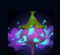
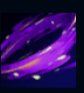
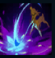
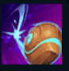
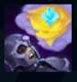

Lillia
| Lillia The Bashful Bloom | |
|---|---|
| Release date | 22.07.2010 |
| Class | Skirmisher |
| Positions | Mage |
| Resource | Mana |
| Range type | Ranged |
| Adaptive type | Magic |
| Base statistics | |||
| Health | 580 – 2110 | Mana | 410 – 1260 |
| Health regen. | 9 – 21.75 |
Mana regen. | 11.5 – 27.65 |
| Armor | 20 – 88 | Attack damage | 61 – 113.7 |
| Magic resist. | 32 – 40.5 | Crit. damage | 175% |
| Move. speed | 330 | Attack range | 325 |
Lillia este o zână-căprioară timidă, care cutreieră pădurile din Ionia. Ascunzându-se de privirile muritorilor, ale căror firi misterioase o fascinează și-o intimidează în egală măsură, Lillia speră să descopere motivul pentru care visele lor nu mai ajung la Copacul Visării. Cutreieră Ionia cu crenguța ei fermecată, în căutarea viselor neîmplinite. Doar atunci va putea să înflorească și ea și să-i ajute pe ceilalți să se dezlege din strânsoarea fricii și să-și găsească scânteia. Iii! |  |
CRENGUȚA CU VISE Dacă lovești un campion sau un monstru cu o abilitate, îi vei provoca daune în timp suplimentare în funcție de viața maximă. |
||
|---|---|---|---|---|
 |
LOVITURI ÎNFLORITOARE Atunci când lovește inamicii cu vrăji, Lillia primește în mod pasiv un bonus la viteza de mișcare, care se cumulează. Poate activa abilitatea pentru a le provoca daune magice inamicilor din apropiere. Cei aflați la marginea zonei suferă daune reale suplimentare. |
|||
 |
AI GRIJĂ! III! Lillia provoacă daune într-o zonă din apropiere. Valoarea daunelor e mai mare în centrul zonei. |
|||
|  |
SĂMÂNȚĂ-VÂRTEJ Lillia aruncă o sămânță care le provoacă daune inamicilor pe care cade și îi încetinește. Dacă nu lovește nimic, va continua să se rostogolească până când lovește un zid sau o țintă. |
|||
 |
CÂNTEC DE LEAGĂN Lillia face toți inamicii afectați de ''Praful de vise'' să devină somnoroși, apoi îi adoarme. Acei inamici vor suferi daune suplimentare când sunt treziți forțat. |